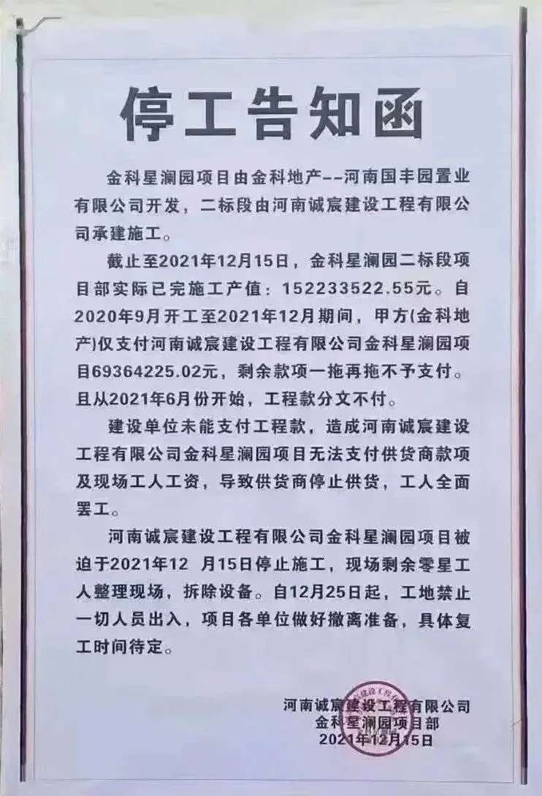

提虎灌顶
昨天，吃瓜。 上次听到13.41亿这个数字，还是在人口普查的时候。 算了算，每天罚款一次，4年就能还完恒大表内的债务了，1恒=1455薇。
NO. 1｜壹
今天，地产股大涨， 主要源于央行和银保监会联合发文的： “ 鼓励并购出险房企优质项目”。
这不仅对优质房企有利，对已暴雷和陷入困境的房企，也是利好，可以通过出售项目回血渡过困境，解决眼前最重要的“活下去”问题。
** 金科 ** 内部已通知员工， 缓至月底发工资 。 昨天金科对内还发了一份通知： ** 《关于防范华东区域各项目停工索赔风险的通知》 ** ，有意思的是，金科在内部发通知，合作方在外部发公告：

看了看金科的债务情况，结合金科近期一系列动作，个人认为金科挺过3月底，问题不大。至于能不能挺过6月及之后，还是要看金科的销售回款情况。
金科是比较典型的”假绿档“，大量负债转移至表外隐藏，所以表外负债具体数量，无从得知。
仅根据表内负债来看，目前续存21只境内债，融资余额172.48亿元。一年内到期的超50亿元债务，及明年迎来回售期的51.5亿元境内债，二者合计 超百亿 。
据金科在今年9月公开的数据，即使剔除金科在今年3月后新增的融资，金科在 未来约1年时间内，还将面临续存到期或回售的债务，高达423亿元 。
此外，身为”担保小王子“的金科，今年4-12月累计新增约482亿 担保融资，其中有106亿元将在2022年到期 。
综上， 未来一年，合计529亿元到期债务 ，够金科发愁的。
念出这数据的时候，我正在喂猪。猪听到这组数字，停下了咀嚼的嘴；我放下了喂猪的桶。我和猪对视了几秒，从它眼神里我能看出，它在担忧。
大概，在担心我未来一年内要卖肉，它的。
NO. 2｜贰
此前，在回复读者时，曾说了那么一句：下雨天，哪有雷只响一声的。后来这两个月，不幸应验了。
我希望大家能培养思考和判断能力。在遇到阳光城、佳兆业等这类暴雷房企时，重点关注几项：债务展期、债务重组、销售回款等。
债务展期后，融资端基本上断了来源，公司要扛过去，主要还是靠销售回款。每个月的净支出在那，企业都在尽力”节流“，很多地产人成了那个代价。
能主抓的”开源“项，只有销售回款这条路。 资产出售也是回款中的一种。
房企的负债，水很深，表内的是它公开让你看得到的数字，表外的是一片迷雾，只能估算个大概。
佳兆业的理财爆雷，远不止此前锦恒财富的127亿元，非锦恒财富产品也达到了40亿元 。 理财产品，就属于表外的一种，按级别来划分，大概属第五级负债。
华夏幸福，新增67.87亿元债务 未能如期偿还。
** 新力，已逾期的境内贷款约63.94亿元 ** （截至本月19日）。
** 阳光城，一笔3亿美元债利息支付已违约 ** ，正多渠道筹措资金，上次付息时间是11月10日，目前已过30天宽限期。
** 花样年今年年内到期的境内债，均已获展期，合计本金及利息18.74亿元 ** 。但距离超520亿元的总债务规模，可谓万里长征第一步。
展期和逾期都是还不上钱了。
只不过展期是双方同意，逾期是单方面同意。一厢情愿和两厢情愿的区别。再一个就是表述上的区别：
诚如苏东坡所著《记承天寺夜游》， 耿直的我一般会说：怀民已寝，巴掌扇醒。高情商的苏东坡却这么写：怀民亦未寝。
NO. 3｜叁
2021年要冲”双千亿“的闽系房企三盛，这几个月甚是难熬。
约两个月前，提到了三盛的跟投兑现出了问题，如今，三盛的理财兑付也出了问题。
看完借款合同，感觉三盛适合做慈善机构，自己都没赚那么多，却愿意给员工那么高利息：其中，9-12个月的年化率(不含)为15%，满12个月的年化率为18%
** 小时候，我以为唐三藏的三藏是经、律、论；人到中年才知道，其实是三藏：藏情、藏欲、藏人。你只想要点利息，他却一直盯着你本金 ** 。
三盛原本规定的员工可以选择退款，现在是既不付息也不退款；原本许诺的1-4级别员工先退，后来又说离职员工先退，现在是 既不给说法，也没有退款 。
目前，三盛在鼓励员工采用”以房抵款“的方式兑付，房屋价格打85折。看了拿出来抵房的，普遍都不怎样。
昨天的文章，读者可能漏掉了个很重要的信息，今天重新说一次： ** 各地金交所迎来新一轮检查，禁止为房地产企业、城投公司等国家限制或有特定规范要求的企业融资 。 **
这意味着，房企接下去基本上没法发行新的理财产品。 其中就包括碧桂园。 我问了一下体制内这方面的朋友，他说，碧有信也没法发行新品了。
今天，碧桂园大量的区域总裁飞回广东开闭门会议。会议后，集团给各区域负责人下达了一条口头通知：
现在， 连夜统计未来一年半的开工面积，不得虚报 ； 明年的费用砍掉一半，付款也是，要精准支付款项 。
读者常说 ， 听 君一席话， 醍醐灌顶。 其实， 这世界本就没有任何一句话，可以让你醍醐灌顶。 真 正让你醍醐灌顶 的 ，只能是一段经历。 而那席 话， 顶多 是 火药仓库内点燃的一 根火柴。
到现在，居然 还有 读者问，xx房企 的 理财产品能不能买？
唐僧说， 世上只有两种妖怪，想吃我的和想睡我的。 别到头来，钱没赚到，还惹了一身骚，那就成了：
提虎灌顶
按日期浏览全部来源（同日按条目标识排序）